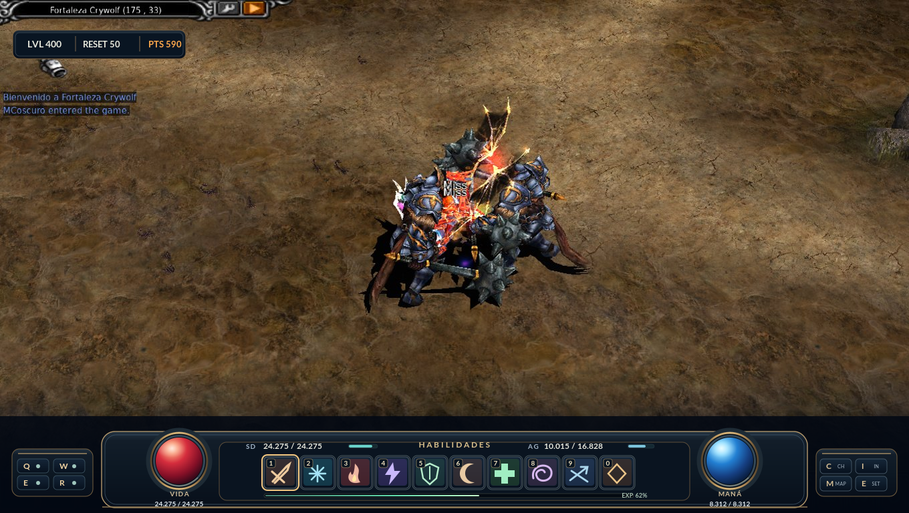

HUD MU SEASON 8 / Propuesta V7 — AEGIS
Propuesta visual original inspirada en referencias de arquitectura UI y arte fantasy.
Barra en juego
Inventario + Artifact

Usa
I
para mostrar inventario y Artifact,
Esc
para cerrar. Esta es una maqueta sobre una captura real, NO un ejecutable ni recursos OZJ instalables.